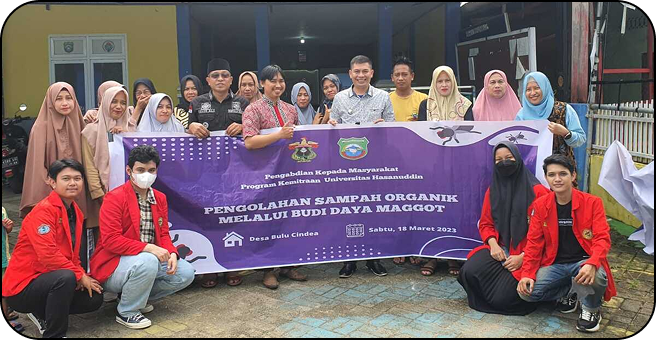
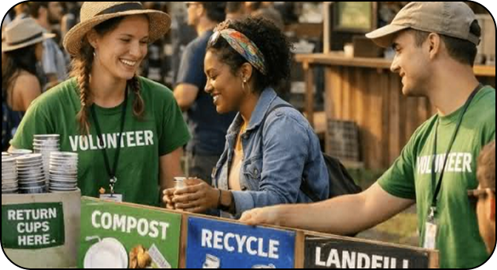
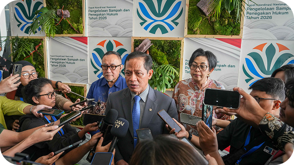

Artikel Terbaru



Acara Mendatang
Kegiatan Pembersihan Sampah Sungai Ciliwung
Bersamang warga indonesia membersihkan sungai.
Kegiatan Pembersihan Sampah Sungai Ciliwung
Bersamang warga indonesia membersihkan sungai.